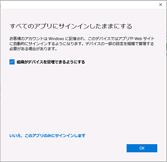

こんにちは、Office サポートの西川 (直) です。
今回の投稿では、VDI 環境における M365Apps のライセンス認証についてご案内します。
お問い合わせいただく中では、共有 VDI 上に M365Apps をインストールしたいというご要望をいただくことがあります。
共有 VDI では、ユーザーが不特定の端末にログオンする場合があるため、M365Apps の 5 台の制限にかかってしまいます。
この場合、M365Apps では以下の共有コンピュータライセンス認証のソリューションが用意されています。
Microsoft 365 Apps に対する共有コンピューターのライセンス認証の概要
https://docs.microsoft.com/ja-jp/deployoffice/overview-shared-computer-activation
記載の通り、共有コンピューターのライセンス認証を利用して M365Apps を使用する場合、この台数制限の対象にはなりません。
ただし、以下の注意点がありますので、ご参考にしてください。
常にインターネット接続ができる環境で使用すること
以下のエンドポイントに接続できる必要があります。Office 365 URL および IP アドレス範囲
https://docs.microsoft.com/ja-jp/microsoft-365/enterprise/urls-and-ip-address-ranges?view=o365-worldwide“ライセンス認証の制限” について
記事内の本項目は、基本的に悪意のあるシステム等に断続的にライセンス認証を行われた場合を想定しています。
通常、一般的なご利用の範囲で、本エラーに遭遇することはございません。
シングルサインオン環境が必須であること
記事内では “ライセンス トークンの移動” について触れられていますが、”ライセンストークンの移動” を実施しても、次回 OS にログオンし M365Apps を起動すると、アカウント画面に警告が表示されたり、サインイン画面が表示されたりします。M365Apps では、ライセンストークンと O365 サービスへの接続情報を分けて %localappdata% 配下に保持しています。
ライセンストークンをローミング対象にすることはできますが、O365 サービスへの接続情報をローミング対象にすることはできません。
共有 VDI 環境でログオフ時に %localappdata% が失われる構成の場合、O365 サービスへの接続情報が失われるため、次回 OS にログオンし M365Apps を起動すると、アカウント画面に警告が表示されたり、サインイン画面が表示されたりするため、シングルサインオンが必須となります。
なお、移動ユーザー プロファイル等で %localappdata% をローミング対象とするのは非推奨となりますが、ご利用の環境において失われない方法があるかはご利用されている製品観点でご確認ください。シングルサインオンについては、ADFS やシームレスシングルサインオンを使用したユーザ対話がなくサインインできる方式をご検討ください。
Azure Active Directory シームレス シングル サインオンとは
https://docs.microsoft.com/ja-jp/azure/active-directory/hybrid/how-to-connect-ssoデバイス登録の無効化について
Microsoft 365 Apps でサインインをする際、以下の画面が表示される場合があります。
チェック オンに設定すると、Intune のライセンスを保有しており Windows の自動登録が可能な場合、Intune および Azure AD にデバイス登録が行われ、[職場または学校にアクセスする]にアカウントが追加されます。
チェックをオフとすると、Azure AD にデバイス登録が行われ、[職場または学校にアクセスする]にアカウントが追加されます。
“このアプリのみ” をクリックすると、認証情報は Office でのみ管理されます。[職場または学校にアクセスする]にアカウントは追加されません。そのため、デバイス登録が不要であれば、Windows 10 Ver 1803 (KB4489894 適用済) 以降の OS においては以下のレジストリを設定していただくと、この画面は表示されず “このアプリのみ” をクリックした際と同等の動作となります。
https://docs.microsoft.com/ja-jp/azure/active-directory/devices/hybrid-azuread-join-plan
-—– 抜粋開始 —–
次のレジストリ値を HKLM\SOFTWARE\Policies\Microsoft\Windows\WorkplaceJoin に追加すると、ドメイン参加済みデバイスが Azure AD 登録済みになることを防ぐことができます:”BlockAADWorkplaceJoin”=dword:00000001。
-—– 抜粋終了 —–
今回の投稿は以上です。
2020/10/16 : デバイス登録の無効化について説明を追記しました。
2020/10/28 : デバイス登録の無効化について、および、シングルサインオンが必須の理由の説明を変更しました。
本情報の内容 (添付文書、リンク先などを含む) は、作成日時点でのものであり、予告なく変更される場合があります。